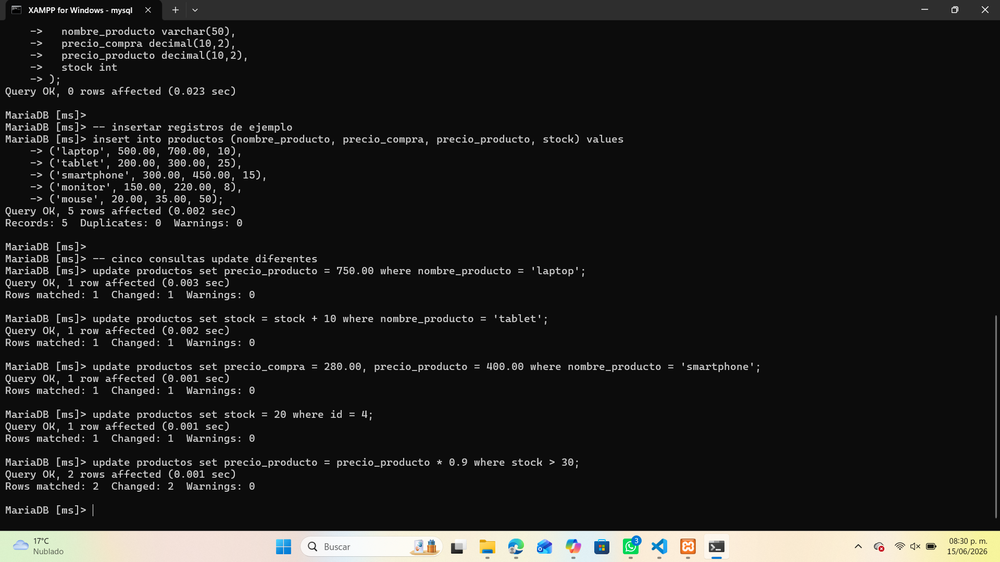
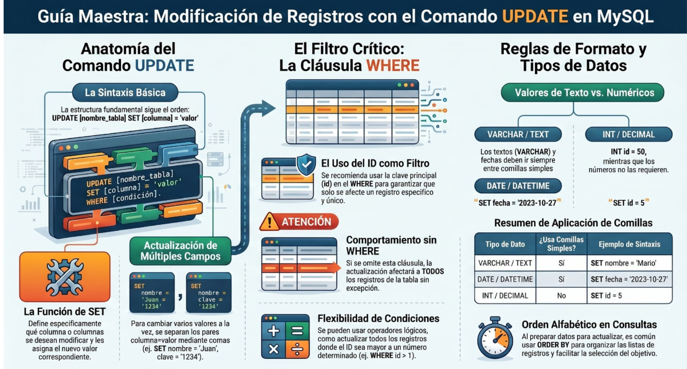

🔄 Actualizar Registros en MySQL
El comando UPDATE se utiliza para modificar los valores de uno o más campos en una tabla existente. Es fundamental usar la cláusula WHERE para evitar actualizar todos los registros por error.
📋 Sintaxis básica
UPDATE nombre_tabla SET columna = valor WHERE condición;Si se omite la cláusula WHERE, todos los registros de la tabla serán modificados.
⚙️ Ejemplos prácticos
| Tipo de actualización | Comando | Resultado |
|---|---|---|
| Actualizar un campo | UPDATE productos SET precio_producto = 750.00 WHERE nombre_producto = 'laptop'; |
Cambia el precio del producto “laptop”. |
| Actualizar con operaciones | UPDATE productos SET stock = stock + 10 WHERE nombre_producto = 'tablet'; |
Incrementa el stock de “tablet” en 10 unidades. |
| Actualizar múltiples columnas | UPDATE productos SET precio_compra = 280.00, precio_producto = 400.00 WHERE nombre_producto = 'smartphone'; |
Modifica precio de compra y venta del “smartphone”. |
| Actualizar por ID | UPDATE productos SET stock = 20 WHERE id = 4; |
Actualiza el stock del producto con ID 4. |
| Actualizar con condición lógica | UPDATE productos SET precio_producto = precio_producto * 0.9 WHERE stock > 30; |
Aplica un descuento del 10% a productos con más de 30 unidades. |
🧩 Ejemplo práctico en MySQL
En este ejemplo se muestran cinco consultas UPDATE diferentes aplicadas a una tabla llamada productos:

📊 Infografía general

💡 Recomendaciones
- Usa siempre la cláusula WHERE para evitar modificar todos los registros.
- Verifica los tipos de datos antes de actualizar (VARCHAR, INT, DECIMAL, DATE).
- Para actualizar varios campos, separa cada par columna‑valor con comas.
- Haz una copia de seguridad antes de realizar cambios masivos.
- Utiliza SELECT para revisar los datos antes y después de la actualización.